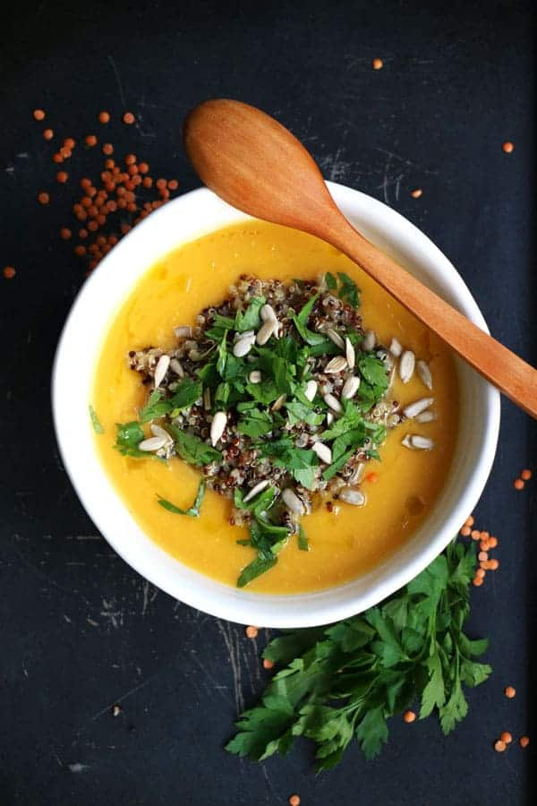

Lentil Soup Recipe

Ingredients:
- 1 cup red lentils
- 1 tbsp olive oil
- 1 small onion, chopped
- 2 cloves garlic, minced
- 1 carrot, diced
- 1 tomato, chopped
- 4 cups vegetable broth
- 1 tsp cumin
- 1/2 tsp turmeric
- Salt & pepper to taste
- Fresh cilantro for garnish
- Lemon wedges for serving
Instructions:
- Heat olive oil in a pot over medium heat.
- Add onions, garlic, and carrots. Sauté for 3-4 minutes.
- Add tomatoes, cumin, turmeric, salt, and pepper. Cook for 2 minutes.
- Stir in lentils and vegetable broth. Bring to a boil.
- Reduce heat and let simmer for 20-25 minutes until lentils are soft.
- Blend slightly for a creamy texture (optional).
- Serve hot, garnished with cilantro and lemon wedges.